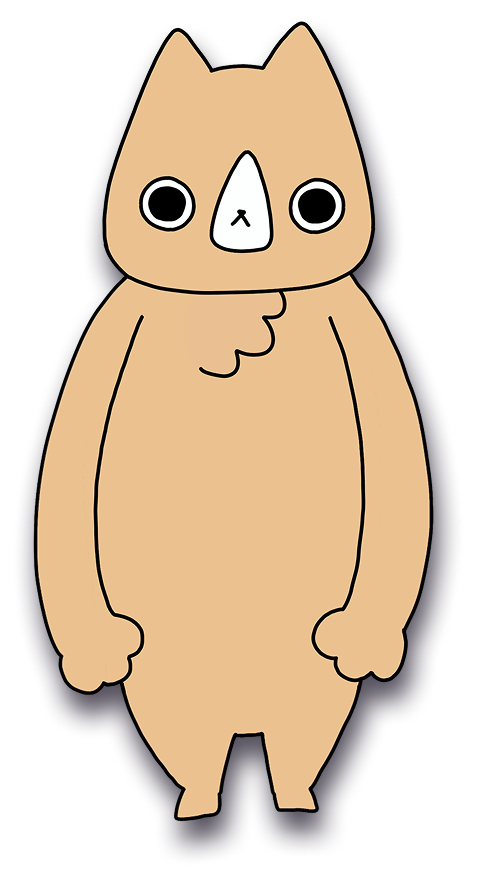
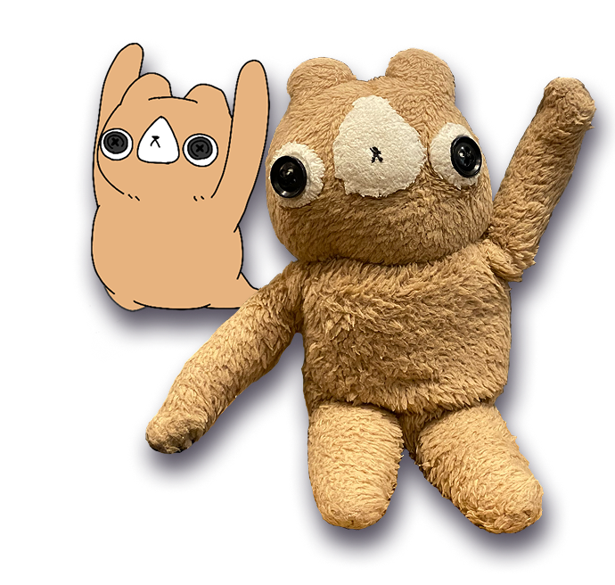
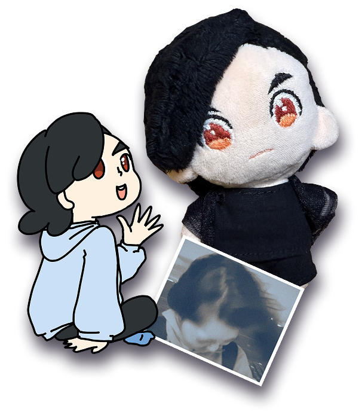
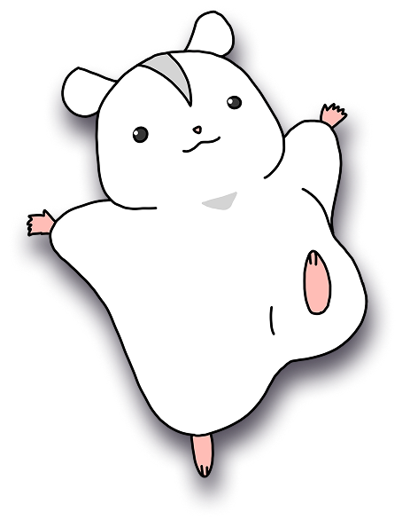
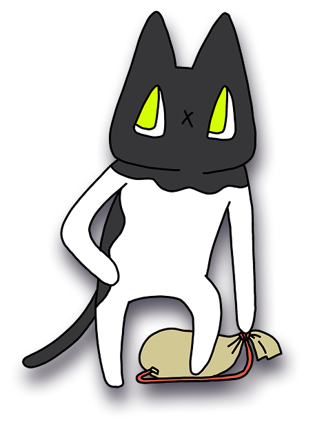

犬タロー
犬のようだけど、犬ではない。
クールに見えるがとてもやさしく、熱いハートを持っている。
もう1体の犬タローと呼び分けるときは「オリジン」と呼ばれている。かっこいいね！
Characters
えりぬいシティに登場する、ちょっと不思議でかわいい仲間たちです。

犬のようだけど、犬ではない。
クールに見えるがとてもやさしく、熱いハートを持っている。
もう1体の犬タローと呼び分けるときは「オリジン」と呼ばれている。かっこいいね！

えりかが犬タローのぬいぐるみをつくった。
そして、ちょっと失敗した。
オリジンとは全く別の人格だが、こいつも犬タローである。
好奇心旺盛で冒険家、かっこよくなりたい。呼び分けるときは「ぬいちゃん」と呼んであげてほしい。

女性。人間の姿、ぬいぐるみの姿、二次元の姿…様々な姿で人生を楽しんでいる。
人間年齢だと34歳。独身。

ハムスター（パールホワイト）の男の子。
おっとりしているが元気いっぱい。
とってもかわいい。

さすらいのネコ。
いろんな場所を転々としてきたようだ。
池袋出身。車道を平気で横切る。
だれかこいつに交通ルールを教えてやって！